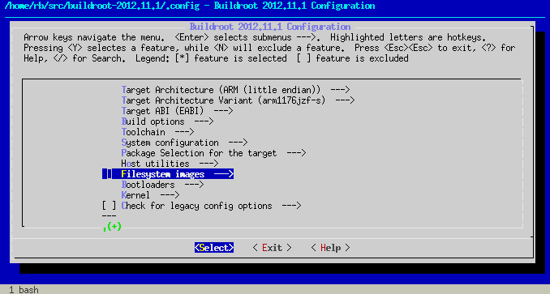

DIY Linux with Buildroot [1/2]
In today's blog post I will explain how to build your own custom Linux system for the Raspberry Pi.
The ideal tool for such an endeavour would be an automated build system which took a set of requirements - the list of packages to include, kernel configuration, etc. - and created a self-contained root filesystem for the Pi, together with a freshly built kernel (kernel.img), boot loader, firmware (bootcode.bin, start.elf) and config files (config.txt, cmdline.txt) ready to be placed onto the /boot partition of the SD card.
As it turns out, there is a system like that out there - it's called Buildroot - and with a little bit of customization we can shape it exactly into the build system we want.
Buildroot grew out from the µClibc (microcontroller libc) project, a reimplementation of the standard Unix C library specially targeted for embedded Linux systems. The µClibc people needed a tool which would automate the creation of such systems and this need led them to the development of Buildroot.
Test drive
As the best way to learn something is by doing it, first I'll show you how to build a basic root filesystem.
Download and extract the latest stable Buildroot to a local directory:
mkdir -p $HOME/buildroot
cd $HOME/buildroot
wget http://buildroot.uclibc.org/downloads/buildroot-2012.11.1.tar.gz
tar xvzf buildroot-2012.11.1.tar.gzThe archive will be unpacked into a directory called buildroot-2012.11.1. Enter this directory (referred to as $TOPDIR from now on):
cd buildroot-2012.11.1and invoke the following make target to configure the system:
make menuconfigThe configuration tool uses kconfig, so you'll find it quite familiar if you have ever configured a Linux kernel.

Here are the settings you should change (everything else can be left at defaults):
Top level configuration
| Target Architecture | ARM (little endian) |
|---|---|
| Target Architecture Variant | arm1176jzf-s |
| Target ABI | EABI |
These correspond to what we have on the Raspberry Pi.
Build options
| Download dir | $(HOME)/buildroot/dl |
|---|---|
| Enable compiler cache | YES |
| Compiler cache location | $(HOME)/buildroot/ccache |
Download dir specifies the directory where Buildroot will download the sources of all packages we have selected for the build. In the default setup, this is a directory under $TOPDIR, but I preferred an external location to enable reuse and prevent accidental removal.
Buildroot can use ccache for compilation of C/C++ source code; this means that object files built with a given command line (compiler configuration) are saved in a cache and are reused when the same object file is to be built again. This saves a lot of time with repeated builds (typical when tinkering) so I turned it on.
Toolchain
| Kernel Headers | Linux 3.6.x kernel headers |
|---|---|
| GCC compiler Version | GCC 4.7.x |
We'll use the latest rpi-3.6.y kernel branch from the foundation's git repository, so here we select matching kernel headers.
| Purge unwanted locales | YES |
|---|---|
| Locales to keep | C en_US |
| Generate locale data | en_US |
You may want to add others - I prefer to keep these pruned to the absolute minimum.
| Use software floating point by default | NO |
|---|---|
| Use ARM Vector Floating Point unit | YES |
We need these for hardfp. Essential stuff.
| Enable large file (files > 2 GB) support | YES |
|---|---|
| Enable IPv6 support | YES |
| Enable RPC support | YES |
| Enable WCHAR support | YES |
| Enable C++ support | YES |
These seemed like a good idea (and without them, certain packages cannot be selected). RPC is needed only if you want to mount NFS filesystems to the Pi.
System configuration
| System hostname | rpi |
|---|---|
| System banner | Welcome to Raspberry Pi! |
| /dev management | Dynamic using mdev |
| Port to run a getty (login prompt) on | tty1 |
| Baudrate to use | 38400 |
The system hostname and the banner can be anything you wish.
Dynamic using mdev means that:
- Buildroot will mount the kernel-provided
devtmpfsfilesystem to/dev- this pseudo fs is automatically populated when Linux detects new hardware - we'll be able to write hotplug scripts to handle device attach/disconnect events, which sounds nice
The getty baudrate is 38400 because that's what I've seen in my /etc/inittab.
Package selection for target
This is the section where you specify which packages get in and which will be left out.
Busybox - which is enabled by default - gives us a fairly complete userland, so the only extra you should enable here is dropbear, a small SSH server under Networking applications which will let us log in remotely.
Also, if you want to mount NFS filesystems, you should enable Networking applications / Portmap.
You may select other packages too, as you see fit.
Filesystem images
| Compression method | gzip |
|---|
Here we ask Buildroot to generate a rootfs.tar.gz (besides rootfs.tar).
Kernel
| Linux Kernel | YES |
|---|---|
| Kernel version | Custom Git tree |
| URL of custom Git repository | https://github.com/raspberrypi/linux |
| Custom Git version | rpi-3.6.y |
| Kernel configuration | Using a defconfig |
| Defconfig name | bcmrpi |
| Kernel binary format | zImage |
With these settings, Buildroot will clone the foundation's rpi-3.6.y branch, configure it using arch/arm/configs/bcmrpi_defconfig (included in the source) and build a zImage which we can then shove into /boot. (Note that post-processing with the imagetool-uncompressed.py script is not needed anymore as the latest firmware can load zImage kernels without a hitch.)
Now exit the configuration program - save the new configuration as you leave! - and initiate a full build of the system by executing:
make allBuildroot will go through the following steps:
- Build a compiler toolchain (gcc, binutils, libtool, autoconf, automake, m4, cmake, pkg-config, etc.) for the host machine running Buildroot
=>$TOPDIR/output/host - Build a
gccwhich can cross-compile to the ARM architecture, together with an ARM µClibc
=>$TOPDIR/output/toolchain - Unpack, configure and build all selected packages using the compiler (and µClibc) built in step 2
=>$TOPDIR/output/build/<package>-<version>
(build dependencies are also installed to$TOPDIR/output/staging) - Install packages
=>$TOPDIR/output/target - Create a root file system image
=>$TOPDIR/output/images/rootfs.tar.gz
and install the kernel
=>$TOPDIR/output/images/zImage
Post-build fixup
There are some minor issues which we'll have to deal with before we can use our freshly baked root fs on the Pi.
As root, unpack output/images/rootfs.tar.gz to its destined place (most likely /dev/mmcblk0p2 or your NFS root - we'll call this place $ROOTDIR from now on) and go through the following steps:
Set a root password
In the default fs, root has no password:
# cat /etc/shadow
root::10933:0:99999:7:::
bin:*:10933:0:99999:7:::
daemon:*:10933:0:99999:7:::
adm:*:10933:0:99999:7:::
lp:*:10933:0:99999:7:::
sync:*:10933:0:99999:7:::
shutdown:*:10933:0:99999:7:::
halt:*:10933:0:99999:7:::
uucp:*:10933:0:99999:7:::
operator:*:10933:0:99999:7:::
ftp:*:10933:0:99999:7:::
nobody:*:10933:0:99999:7:::
default::10933:0:99999:7:::This would be fine if we logged in via the console (or over telnet), but dropbear requires a password to be set if we want to SSH to the box.
A crypt-based password is fine, so let's create a crypted version of the word passpass and set it as the root password in /etc/shadow:
CRYPTEDPASS=$(perl -e 'print crypt("passpass","salt")')
sed -i -e "s#^root:[^:]*:#root:$CRYPTEDPASS:#" $ROOTDIR/etc/shadowMount /boot
We want to mount /dev/mmcblk0p1 to /boot on the Pi, so we create a mount point and write the necessary entry to /etc/fstab:
install -d -m 0755 $ROOTDIR/boot
echo '/dev/mmcblk0p1 /boot vfat defaults 0 0' >> $ROOTDIR/etc/fstabCopy firmware files and kernel to /boot
Mount the SD card's first partition to - let's say - /mnt/rpi/boot ($BOOTDIR), then:
cp $TOPDIR/output/images/zImage $BOOTDIR/kernel.img
git clone https://github.com/raspberrypi/firmware
cp firmware/boot/bootcode.bin $BOOTDIR
cp firmware/boot/start.elf $BOOTDIR
cp firmware/boot/fixup.dat $BOOTDIRWe also need a command line for our kernel, so put the following line into $BOOTDIR/cmdline.txt:
dwc_otg.lpm_enable=0 console=ttyAMA0,115200 kgdboc=ttyAMA0,115200 console=tty1 elevator=deadline rootwait root=/dev/mmcblk0p2 rootfstype=ext4This comes from Raspbian, you may vary it as you wish - here is my latest NFS root cmdline for example:
dwc_otg.lpm_enable=0 console=ttyAMA0,115200 kgdboc=ttyAMA0,115200 console=tty1 elevator=deadline rootwait ip=::::rpi::dhcp root=/dev/nfs nfsroot=192.168.1.1:/mnt/shares/rpifs/nfsroot,tcp,rsize=32768,wsize=32768(For the syntax and semantics of the ip parameter see the relevant kernel docs.)
Now the system is ready: put the SD card into your Pi and hope for the best. :-) (But seriously, it should work.)